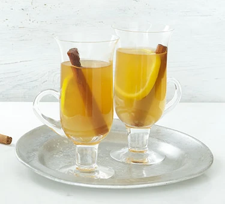

Hot Toddy

Description
Warm up with a hot toddy. The combination of whisky, honey, lemon, cinnamon and cloves really packs a punch and is great for entertaining in winter.
Ingredients
- 50ml whisky
- 3 tsp honey
- 1 cinnamon stick , snapped in half
- 1 lemon , half juiced and half sliced
- 2 cloves
Steps
- Whisk the whisky and honey together and split between 2 heatproof glasses.
- Add half of the cinnamon stick to each, then top up with 200ml boiling water.
- Add a splash of lemon juice to each, then taste and add more to your preference. Finish each with a slice of lemon, studded with a clove, and serve immediately.